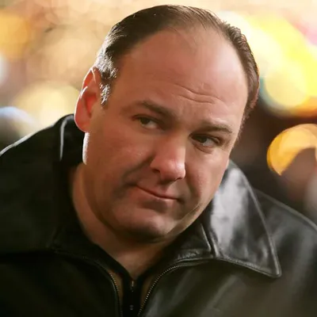
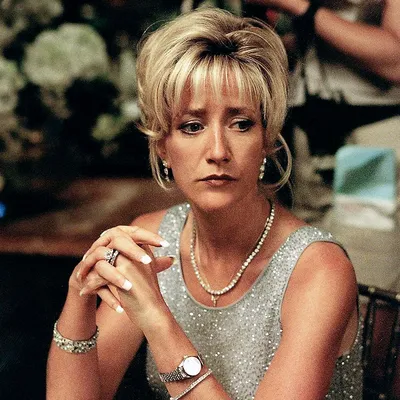
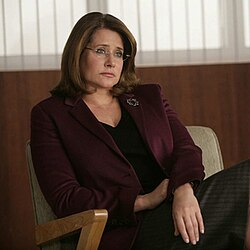

Aunque sus palabras pueden tener un gusto cuestionable, su fuerza es indiscutible. Le dijo a su psiquiatra que está en el negocio de la gestión de residuos, pero Anthony Soprano es en realidad el jefe de la familia DiMeo, la más potente organización criminal en New Jersey. Es la segunda generación de "chicos listos", ya que Tony es el hijo de Johnny Boy Soprano, un capo de la familia DiMeo que metió al hijo en la profesión enseñándole los trucos. Después de la muerte de Johnny, Tony tuvo como mentor a Hesh Rabkin, Jackie Aprile y Pussy Bonpensiero, y también al hermano de su padre, Corrado "Junior" Soprano. Después de la muerte de Jackie Aprile y del encarcelamiento de Junior Soprano, sube al "trono" de la Familia.

Carmela DeAngelis se fijó en su futuro marido en el Instituto, aunque los dos pertenecían a mundos muy diferentes. Mientras Tony era un estudiante sin futuro, Carmela era buena estudiante y popular. Carmela tenía los ojos puestos en la universidad; Tony parecía predestinado a los suburbios de New Jersey. Que estos dos polos opuestos se atrajeran, y que después se casaran y comenzaran una vida juntos, puede parecer al principio sorprendente. Pero si examinamos los acontecimientos más de cerca, están hechos uno para el otro.

La Dra. Jennifer Melfi es tal vez la última persona que alguien pensaría que está relacionada con el crimen organizado. Su vida privada es casi inexistente, estando divorciada y con un hijo que va a la universidad Bard. Profesionalmente hablando, es una respetada psiquiatra establecida por su cuenta. Pero un día abrió la puerta de su sala de espera y se topó cara a cara con la personificación de la cosa nostra: Tony Soprano. El vecino le dio referencias de ella, ya que el capo estaba buscando un tratamiento para sus ataques de pánico. Aquel encuentro cambiaria la vida de Melfi para siempre, y más de una vez deseó que no hubiera pasado.

Christopher Moltisanti es el sobrino de Tony y el primer primo de Carmela. Su padre, Dickie Moltisanti era una especie de mentor para el joven Tony. Así que cuando el Moltisanti sénior fue disparado y muerto, Tony a cambio, tomó a Christopher bajo su ala. Y ya que Christopher recuerda muy poco a su padre - estaba todavía en pañales cuando su padre fue asesinado - Tony es lo más cercano a una figura paternal que Chris conoce. En un principio era un simple asociado de la familia Soprano-DiMeo, aunque después lo admitieron dentro del grupo y ascendió de soldado a capo.